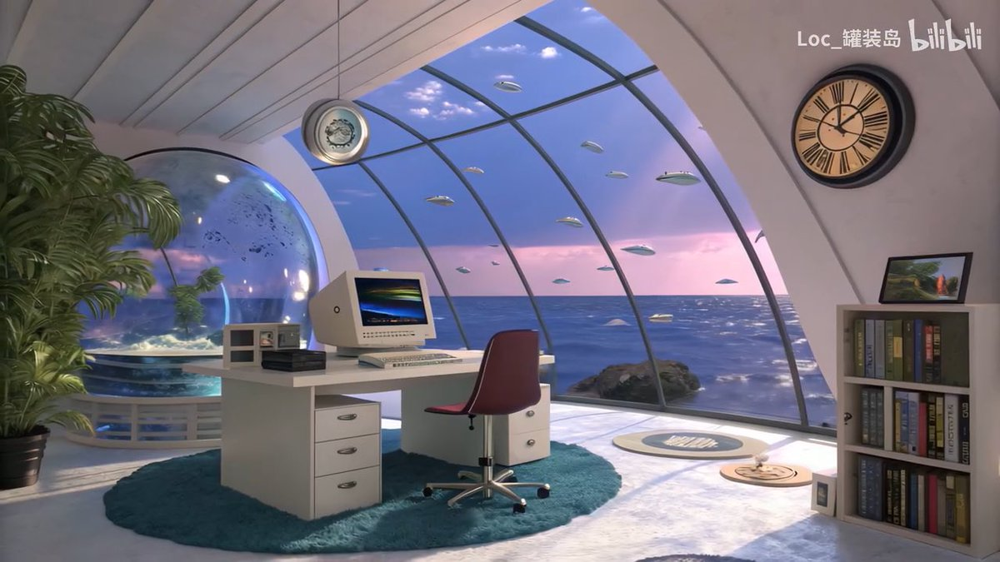

🤯凌月月🤯🤍
@PsycheRabbiiOwO
补了石纪元，真是感慨呢
前几季，千空在一片原始世界，复活同伴，尝试生存，解决分歧，到这里还能说是热血漫。
最后一季就是童话了，全世界的人团结起来，用最原始的科技把人类再一次送上月球
现实里的，却是矛盾仇恨不断，美好的未来好像只在过去存在。
“地球村”，这个词就是这部作品最深的表达。弹幕里在吐槽剧情多么不合逻辑，又或者科技进展太快不合现实等等。
其实我们是真的有过这个憧憬，“只要我们一起发展工程和科技，就能。。。”
或许这是只属于零零年代的终极幻想吧
（配图：记忆里的我们，和想象中的未来）
